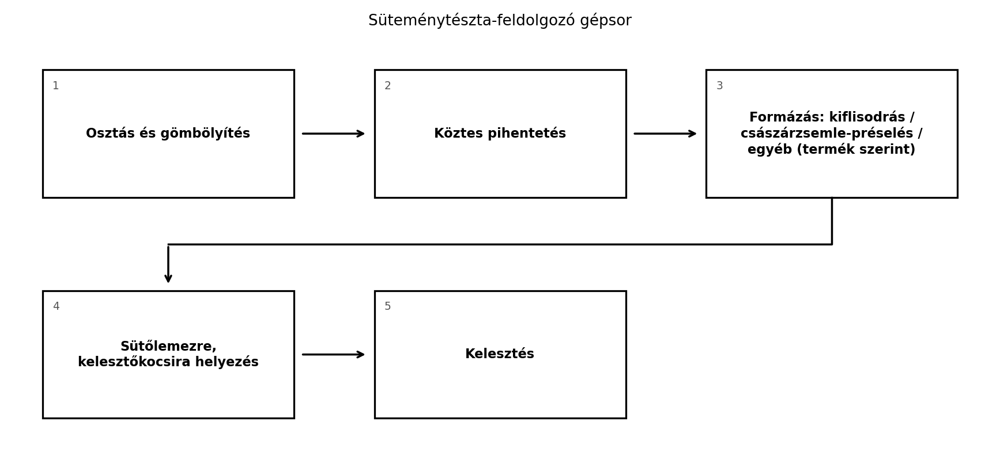

Hajnalban 400 darab vizes zsemlét és 300 darab tejes kiflit kell készíteni a reggeli kiszállításhoz. Ha minden darabot kézzel mérsz, gömbölyítesz és sodorsz, az eltart órákig, és a darabok tömege, alakja sem lesz egyenletes. A süteménytészta-osztó, a formázó és a kiflisodró gépek ezt a munkát gyorsítják fel úgy, hogy közben a higiéniai és a gépbiztonsági szabályokat be kell tartani. Az alfejezetben a félautomata osztó-gömbölyítőt, a formázógépet, a kiflisodrót, a császárzsemle-formázót és a pihentetőket tanuljuk meg biztonságosan kezelni, beállítani és tisztítani.
Egy jellemző süteménytészta-feldolgozó gépsort mutat az alábbi folyamatábra. A tésztát először egyenlő darabokra osztjuk és gömbölyítjük, majd a köztes pihentetőben rövid ideig lazulni hagyjuk, és csak ezután formázzuk. A formázás termékenként más gépen történik: a kifli a kiflisodrón, a császárzsemle a külön formázógépen kapja meg a jellegzetes mintáját. A formázott darabok sütőlemezre vagy kelesztőkocsira, majd a kelesztőbe kerülnek.

A nyilak azt mutatják, hogy a gépi lépések egymásra épülnek. Ha az osztás pontatlan, a későbbi formázás és sütés is hibás lesz. Ha a pihentetés elmarad, a tészta a sodrásnál összehúzódik, és a kifli kinyílik.
Definíció. A süteménytészta-osztó gép a feldolgozásra előkészített tésztalapot vagy tésztatömböt azonos tömegű darabokra osztja. A félautomata osztó-gömbölyítő ezt az osztást és az azt követő gömbölyítést egy munkaciklusban végzi el.
A félautomata osztó-gömbölyítő gyakori változata a 30 darabos prés. A gép két fő részből áll:
A tésztából kézzel vagy nyújtógéppel egyenletes vastagságú, téglalap alakú lapot készítünk. A lapot az alsó asztalra helyezzük, majd a felső présfejet leengedjük. A késrács először 30, körülbelül egyenlő részre vágja a tésztát, a formák pedig minden darabot gömbölyítenek. A présfej felemelése után a darabok a tálcán maradnak.
Szabály. A présbe helyezett tészta tömege, vagyis a préstömeg határozza meg az egy darabra jutó tésztamennyiséget.
ahol:
A feladási tömeg számítását a Feladási tömeg, préstömeg és osztási számítások alfejezetben tanultuk:
ahol a késztermék előírt tömege, pedig az erjedési (kelesztési), sütési és hűlési veszteség együttes értéke tizedes törtben kifejezve, ahogy a hivatkozott alfejezetben (ha egy példa csak a sütési és hűlési veszteséggel számol, azt külön jelezzük).
A prés beállításakor tehát nem a présgépet „állítjuk” darabtömegre, hanem a tésztalap tömegét mérjük le, és a vastagságot úgy alakítjuk, hogy a préskamrát egyenletesen kitöltse. A gép a darabszámot fixen hozza; a darabtömeg a bevitt tésztamennyiségből adódik.
Az ábra a prés részeit (1 tálca a tésztalappal, 2 présfej, 3 osztókés-rács 30 cellával, 4 gömbölyítő formák, 5 préskar, 6 a gömbölyítő mozgás kapcsolója, 7 veszélyzóna a présfej alatt, 8 vészleállító) és az ötlépéses munkaciklust mutatja.
A présfej alatti tér (7) zúzásveszélyes: a présfej leengedése és a gömbölyítés közben oda nyúlni tilos, a tálcát csak a felemelt, álló présfej alól szabad kivenni. A vészleállító leállít, de nem választja le a gépet; a késrács tisztítása csak leválasztott, újraindítás ellen biztosított gépen történhet. A HTML-kiadásban a préstömeg és a darabszám beírásával a darabtömeg is kiszámolható (pl. 1950 g / 30 = 65 g; szemléltető érték).
Definíció. A formázógép a gömbölyített tésztadarabot a kívánt előalakra, például ovális, hosszúkás vagy csiga alakúra alakítja. A kiflisodró gép a formázott, kinyújtott tésztadarabot feltekerve kifli alakot hoz létre.
A kiflisodró gép általában a következő részekből áll:
A kiflisodró gép beállítása több paramétertől függ:
A gyakorlatban a beállítást mindig próbadarabokkal kell ellenőrizni. Ha a kifli túl rövid, a nyújtóhengerek rését kis lépésben szűkíteni kell (vékonyabb, hosszabb lap), vagy a tésztát jobban kell pihentetni; ha túl hosszú vagy szakad, a rést tágítani kell. Ha a kifli kinyílik, a tészta túl hideg, feszes vagy pihentetlen, illetve a tekercs laza, a csúcs nem került alulra. Ha a kifli felülete reped vagy szakad, a tészta kiszáradt, a sodrás túl szoros, vagy a hengerek rése túl szűk (ellenőrizendő: gépkönyv).
Az ábra a kiflisodró anyagútját mutatja: 1 bevezető szalag, 2 első és 3 második (kisebb résű) nyújtóhengerpár, 4 sodróelem, 5 kihordó szalag, 6 védőburkolat a sraffozott behúzási pontokkal, 7 vészleállító. Középen a darab alakváltozása felülnézetben, alul a három jellemző hiba.
A gép ugyanazt a mozdulatsort végzi, mint a kézi kiflisodrás (Alakító műveletek és a pihentetés): lap → feltekerés a széles végtől → csúcs alul. A HTML-kiadásban a hengerrés és a tészta állapota kiválasztható, és kiemelődik a várható hiba.
Definíció. A császárzsemle-formázó gép a gömbölyített tésztadarabot lapos koronggá nyújtja, lebenyekre hajtogatja, majd középen összepréseli, így a császárzsemlére jellemző, sütés után is látható mintázatot alakítja ki.
A gép munkahengerrel vagy présfejjel dolgozik. A tésztadarabot először egyenletes vastagságú koronggá nyújtja, majd hajtogatóujjak vagy formázókések öt-hat lebenyt hajtanak a középpont felé. Végül egy bélyegző vagy nyomólap a közepét összepréseli, és kissé ellapítja a darabot.
A beállításnál a következőket kell ellenőrizni:
Ha a présnyomás túl kicsi, a minta sütés közben eltűnik. Ha a tészta túlzottan megkelt a formázás előtt, a mintázat ugyancsak ellaposodik. A túl mély préselés viszont elvékonyíthatja a tészta közepét, és a termék sütés közben kinyílhat.
A minta kialakulását az ábra felső sora mutatja felülről: 1 gömb, 2 lapos korong, 3 öt lebeny a középpont felé hajtva, 4 középpréselés bélyegzővel. Alul balra a formázófej oldalnézete (5 hajtogatóujjak, 6 bélyegző, 7 védőburkolat), jobbra a kész termékek: 8 helyes, 9 eltűnő minta (kis présnyomás vagy túlkelt darab), 10 középen kinyílt termék (túl mély préselés).
A HTML-kiadásban a présnyomás csúszkával állítható, és kiemelődik a hozzá tartozó kész termék. A formázófej alá futó gépnél nyúlni tilos; a fej tisztítása csak leválasztott, álló gépen történhet.
Definíció. A süteménytészta-pihentető olyan berendezés, amely a formázott vagy sodort tésztadarabokat meghatározott ideig, kíméletesen, megfelelő hőmérsékleten és páratartalom mellett pihenteti, hogy a sikérszálak elernyedjenek, és a darabok a kelesztésnél ne húzódjanak össze.
A pihentető lehet:
A pihentetési idő termék- és tésztafüggő, például 5–15 perc, a hőmérséklet jellemzően 24–28 °C, a relatív páratartalom 65–75% lehet. Ezek tanulási példák, a pontos értéket az üzemi technológiai lap és a gyártói adatlap határozza meg (ellenőrizendő: üzemi technológiai lap).
A pihentetők ápolásánál fontos:
Gépbiztonság. A süteménytészta-osztó, formázó, sodró és pihentető gépek mozgó vágó-, nyomó-, hajtogató- és szalagelemei súlyos kézsérülést okozhatnak. A gépet csak betanítás után, felügyelet mellett kezelheted. Használat előtt ellenőrizd a védőburkolatokat, a reteszelést és a vészleállító gombot. Tilos a futó gépbe, a forgó hengerek közé vagy a présfej alá nyúlni. Tilos a védőburkolatot, reteszelést, biztonsági kapcsolót kiiktatni vagy áthidalni. Tisztítás, beállítás, karbantartás előtt a gépet le kell állítani, áramtalanítani kell, és meg kell várni, hogy minden mozgó része megálljon. A gépet csak az újraindítás ellen biztosított állapotban szabad tisztítani.
Előírás. Az élelmiszeripari gépekre az uniós gépbiztonsági előírások vonatkoznak, a gépen CE-jelölésnek és megfelelőségi nyilatkozatnak kell lennie. A sütőipari gépek biztonsági követelményeit harmonizált szabványok is részletezik, például az MSZ EN sorozat élelmiszeripari gépbiztonsági szabványai (ellenőrizendő: hatályos gépbiztonsági rendelet és konkrét szabványszámok). A gyártói gépkönyvben megadott üzemeltetési, karbantartási és tisztítási előírásokat mindig be kell tartani.
1. példa – 30 darabos prés préstömege.
Adott: a kész zsemle előírt tömege 56 g, a sütési és hűlési veszteség
együttesen 14%.
Keresett: a feladási tömeg és a 30 darabos prés préstömege.
Képlet:
.
Behelyettesítve:
.
Préstömeg:
.
Ellenőrzés: a présbe tett tészta 30 darabra oszlik, így 1953 g / 30 =
65,1 g/darab. A késztermék tömege a veszteség után várhatóan 65,1 g ×
0,86 = 56,0 g. ∎
2. példa – A présbe tett tészta ellenőrzése.
A pék a présből kivett 10 darabot leméri. A mért tömegek: 64,0; 65,2;
65,8; 64,4; 65,0; 64,7; 65,3; 64,9; 65,1; 65,6 g.
Átlag:
.
A cél 65,1 g, az átlag 65,0 g, tehát a présbe tett tészta mennyisége
elfogadható. Ha az átlag jelentősen eltérne, a préstömeget kell
korrigálni, vagy a tésztalap vastagságát egyenletesebbé kell tenni.
∎
3. példa – Kiflisodró próbadarabjai.
A kiflisodró beállítása után a kezelő 5 próbadarab hosszát méri: 15,5;
14,8; 15,2; 14,9; 15,1 cm. A cél 15 cm. Az átlag:
.
A hossz megfelelő, a nyújtóhengerek rését nem kell módosítani. Ezt a
mérést a gyártói beállítási útmutató szerint kell elvégezni, mert a
résméret és a szalagsebesség összefügghet (ellenőrizendő:
gyártói adatlap). ∎
Egy pékségben a kiflisodró gép után a kiflik sütés közben rendszeresen kinyíltak. A kezelő a tésztát hibáztatta, mert a tészta hőmérséklete csak 20 °C volt, a pihentetési idő pedig lerövidült. A hibakeresés során a pék megmérte a sodrás előtti tészta hőmérsékletét, és azt találta, hogy a tészta túl hideg, a sikérszálak feszesek. A tekercs emellett laza volt, a csúcs nem került mindig alulra, ezért a darab sütés közben kinyílt. A megoldás a tészta hőmérsékletének 26 °C-ra emelése, a pihentetés 10 percre növelése és a sodróháló beállításának ellenőrzése volt, hogy a tekercs feszes, zárt legyen. A kiflik ezután megtartották alakjukat. A tanulság: a gép beállítását mindig a tészta állapotával együtt kell vizsgálni.
A 30 darabos félautomata osztó-gömbölyítő használata egyenletes darabtömeggel, a kiflisodró gép beállítása próbadarabokkal, valamint a gépek biztonságos tisztítása.
Ellenőrzési pont: mérj le véletlenszerűen 5–10 darabot, és hasonlítsd a feladási tömeghez. Az átlag a megengedett tűrésen belül legyen (ellenőrizendő: üzemi technológiai lap tűrése).
Dokumentálás: a gépnaplóba írd be a beállítások változását, a tisztítás időpontját, a kezelő nevét, az ellenőrzések eredményét.
A gépi feldolgozás minőségi jellemzői:
Hiba: a présből kikerülő darabok tömege kisebb,
mint a feladási tömeg.
Ok: nem mérték le a présbe helyezett tésztát, vagy a
tésztalap vastagsága egyenetlen.
Megoldás: préstömeget számolni, a tésztalapot
egyenletesen nyújtani, próbadarabokat mérni.
Hiba: a kifli sütés közben kinyílik.
Ok: túl hideg, túl feszes vagy pihentetlen tészta, laza
tekercs (a csúcs nincs alul); a túl szoros sodrás inkább repedést
okoz.
Megoldás: a tészta hőmérsékletét 24–28 °C-ra emelni, a
pihentetést növelni, a hengerrést tágítani.
Hiba: a császárzsemle mintázata sütés után alig
látszik.
Ok: gyenge présnyomás, túlkelt tészta, vagy a
hajtogatás időzítése rossz.
Megoldás: a présnyomást növelni, a kelesztési időt
csökkenteni, a hajtogató elemeket beállítani.
Hiba: a pihentetőn a darabok összeragadnak vagy
megnyúlnak.
Ok: túl sok liszt, magas páratartalom, zsúfolt
pálya.
Megoldás: egyenletes lisztezés, a pihentető
kapacitásának betartása, a felület szellőztetése.
Hiba: a gép tisztítása közben a dolgozó a
védőburkolatot nyitva hagyja, vagy a gépet nem áramtalanítja.
Ok: sietség, rossz beidegződés.
Megoldás: munkautasítás, biztonsági reteszelés, csak
áramtalanított gépen végzett tisztítás.
1. feladat (A). Definiáld a préstömeget, és írd fel a képletét.
2. feladat (A). Egy 30 darabos présbe 1950 g tésztát helyezünk. Mennyi az egy darabra jutó tésztamennyiség?
3. feladat (B). A kész vizes zsemle tömege 50 g, a sütési és hűlési veszteség együttesen 12%. Mennyi a feladási tömeg, és mennyi tésztát kell a 30 darabos présbe tenni?
4. feladat (B). A kiflisodró beállítása után mért kiflihosszúságok: 13,8; 14,2; 13,5; 14,0; 13,6 cm. A cél 14 cm. Számold ki az átlagot, és döntsd el, kell-e módosítani a beállítást.
5. feladat (C). Sorold fel a félautomata osztó-gömbölyítő használat előtti ellenőrzési pontjait a higiénia és a biztonság szempontjából, legalább öt pontban.
6. feladat (D). A kiflisodró tisztítása közben a kezelő a gépet leállítja, de nem áramtalanítja, és egy kolléga véletlenül megérinti az indítógombot. Mi a veszély? Írd le a helyes tisztítási műveletsort a biztonsági sorrenddel.
1. feladat.
A préstömeg a présbe egyszerre helyezett tészta tömege, amely a prés
darabszámából és a feladási tömegből adódik. Képlete:
.
2. feladat.
Adott:
,
.
Keresett:
.
Képlet:
.
Behelyettesítve:
.
Ellenőrzés: 30 × 65 = 1950 g. ∎
3. feladat.
Adott:
,
,
.
Keresett:
és
.
Képlet:
.
Behelyettesítve:
.
Préstömeg:
.
Ellenőrzés: 1704 g / 30 = 56,8 g; a veszteség után várható késztömeg
56,8 × 0,88 ≈ 50 g. ∎
4. feladat.
Mért hosszúságok összege:
.
Átlag:
.
A cél 14 cm, az átlag 13,82 cm, tehát a kifli kissé rövid. A gyártói
útmutató szerint a nyújtóhengerek rését enyhén szűkíteni (vékonyabb,
hosszabb lap), vagy az előnyújtott tésztalapot hosszabbra kell venni, és
új próbadarabokkal ellenőrizni. ∎
5. feladat.
Használat előtti ellenőrzési pontok:
6. feladat.
A veszély: ha a gép nincs áramtalanítva, az indítógomb véletlen
megnyomásakor a hengerek és szalagok elindulhatnak, és a tisztítást
végző kezét becsíphetik, törhetik vagy súlyos szakadást
okozhatnak.
Helyes sorrend:
1. állítsd le a gépet;
2. áramtalanítsd, zárd ki a főkapcsolót;
3. várd meg, amíg minden mozgó rész megáll;
4. távolítsd el a morzsát;
5. tisztítsd és fertőtlenítsd a felületeket;
6. ellenőrizd a védőburkolatokat, a reteszelést;
7. csak ezt követően helyezd vissza üzemkész állapotba, és írd be a
gépnaplóba az elvégzett munkát. ∎
A süteménytészta-osztó és a félautomata osztó-gömbölyítő a tésztát azonos tömegű darabokra osztja és gömbölyíti. A 30 darabos prés préstömege a darabszám és a feladási tömeg szorzata: . A feladási tömeget a késztermék tömegéből és a veszteségekből számítjuk, ahogyan a Feladási tömeg, préstömeg és osztási számítások alfejezetben láttuk. A kiflisodró gép a kinyújtott tésztadarabot feltekerve kifli alakot ad; a beállítást próbadarabok hosszának és alakjának ellenőrzésével kell elvégezni. A császárzsemle-formázó lemezt hajtogat és préseli a mintát. A pihentetők a formázás utáni tésztafeszültséget csökkentik. Minden gépre érvényes: csak betanítás után, felügyelettel szabad kezelni, a védőburkolatot és a reteszelést tilos kiiktatni, tisztítani csak leállított, áramtalanított, újraindítás ellen biztosított gépen szabad. Ezt a beállítási logikát használjuk tovább a Nyújtógép, tésztalapító, gyártósorok és a feldolgozó asztal alfejezetben, valamint a Vizes tészta és vizes tésztából készült péksütemények és a Péksütemények feldolgozása, kelesztése és sütése a gyakorlatban alfejezetekben.
Az alfejezet a hazai sütőipari géphasználati gyakorlatot és a munkavédelmi, gépbiztonsági alapelveket követi. A hivatkozott paraméterek tanulási példák, nem gyártói előírások. A kiadás előtt ellenőrizendő: